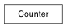

Dict subclass for counting hashable items. Sometimes called a bag or multiset. Elements are stored as dictionary keys and their counts are stored as dictionary values.
>>> c = Counter('abcdeabcdabcaba') # count elements from a string
>>> c.most_common(3) # three most common elements
[('a', 5), ('b', 4), ('c', 3)]
>>> sorted(c) # list all unique elements
['a', 'b', 'c', 'd', 'e']
>>> ''.join(sorted(c.elements())) # list elements with repetitions
'aaaaabbbbcccdde'
>>> sum(c.values()) # total of all counts
15
>>> c['a'] # count of letter 'a'
5
>>> for elem in 'shazam': # update counts from an iterable
... c[elem] += 1 # by adding 1 to each element's count
>>> c['a'] # now there are seven 'a'
7
>>> del c['b'] # remove all 'b'
>>> c['b'] # now there are zero 'b'
0
>>> d = Counter('simsalabim') # make another counter
>>> c.update(d) # add in the second counter
>>> c['a'] # now there are nine 'a'
9
>>> c.clear() # empty the counter
>>> c
Counter()
Note: If a count is set to zero or reduced to zero, it will remain in the counter until the entry is deleted or the counter is cleared:
>>> c = Counter('aaabbc')
>>> c['b'] -= 2 # reduce the count of 'b' by two
>>> c.most_common() # 'b' is still in, but its count is zero
[('a', 3), ('c', 1), ('b', 0)]
Return a shallow copy.
Iterator over elements repeating each as many times as its count.
>>> c = Counter('ABCABC')
>>> sorted(c.elements())
['A', 'A', 'B', 'B', 'C', 'C']
# Knuth’s example for prime factors of 1836: 2**2 * 3**3 * 17**1 >>> prime_factors = Counter({2: 2, 3: 3, 17: 1}) >>> product = 1 >>> for factor in prime_factors.elements(): # loop over factors ... product *= factor # and multiply them >>> product 1836
Note, if an element’s count has been set to zero or is a negative number, elements() will ignore it.
List the n most common elements and their counts from the most common to the least. If n is None, then list all element counts.
>>> Counter('abcdeabcdabcaba').most_common(3)
[('a', 5), ('b', 4), ('c', 3)]
Like dict.update() but subtracts counts instead of replacing them. Counts can be reduced below zero. Both the inputs and outputs are allowed to contain zero and negative counts.
Source can be an iterable, a dictionary, or another Counter instance.
>>> c = Counter('which')
>>> c.subtract('witch') # subtract elements from another iterable
>>> c.subtract(Counter('watch')) # subtract elements from another counter
>>> c['h'] # 2 in which, minus 1 in witch, minus 1 in watch
0
>>> c['w'] # 1 in which, minus 1 in witch, minus 1 in watch
-1
Like dict.update() but add counts instead of replacing them.
Source can be an iterable, a dictionary, or another Counter instance.
>>> c = Counter('which')
>>> c.update('witch') # add elements from another iterable
>>> d = Counter('watch')
>>> c.update(d) # add elements from another counter
>>> c['h'] # four 'h' in which, witch, and watch
4